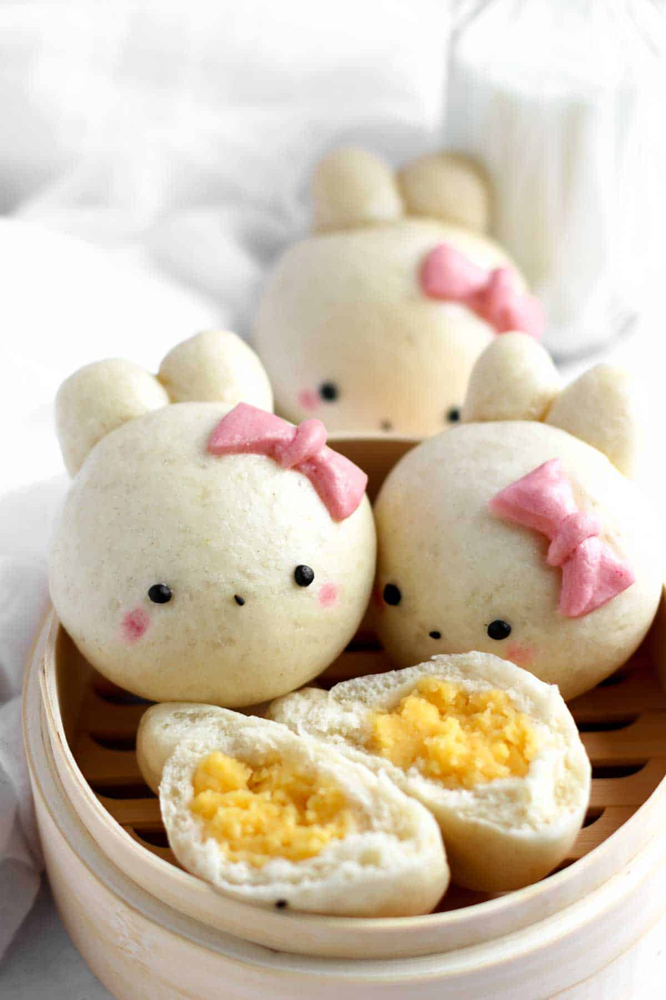

Custard Buns

Steamed custard buns, also known as custard-filled buns or custard buns, are a type of Chinese dim sum delicacy. They are soft, fluffy steamed buns filled with a sweet and creamy custard filling. These buns are often served hot and are a popular choice for breakfast, brunch, or as a snack.
Steamed custard buns are beloved for their soft, pillowy texture and the delightful contrast between the tender dough and the sweet, creamy custard. They are a popular treat in Chinese cuisine and have gained popularity in many other parts of the world due to their irresistible taste and unique texture.
Ingredients
Custard
- 200ml milk
- 20g butter
- 30g sugar
- 20g corn starch
- 2 egg yolks
- 3-4 drops vanilla
Bao Bun
- 260g ap flour
- 26g sugar
- 4g salt
- 160ml warm milk
- 3g yeast
- 4g baking powder
- 10g oil
Steps
- Whisk egg yolks and sugar together
- Melt butter and milk
- Mix egg mixture with melted butter and milk
- Add corn starch and vanilla
- Add mixture to pan on low heat and mix until thick
- Transfer to flat container and let it cool in the freezer for at least 20 minutes
- Combine flour, sugar, and salt. Mix well so that the yeast and salt do not mix
- Add yeast, baking powder, and warm milk
- Combine until it forms a dough like texture
- Add oil and knead for 3-5 minutes
- Divide dough into equal parts and let rest for at least 10 minutes
- Flatten one part of the dough out into a circle and add the custard in the middle
- Form the dough into a ball and repeat for remaining parts of dough
- Place each ball onto parchment paper
- Steam buns for 12-15 minutes